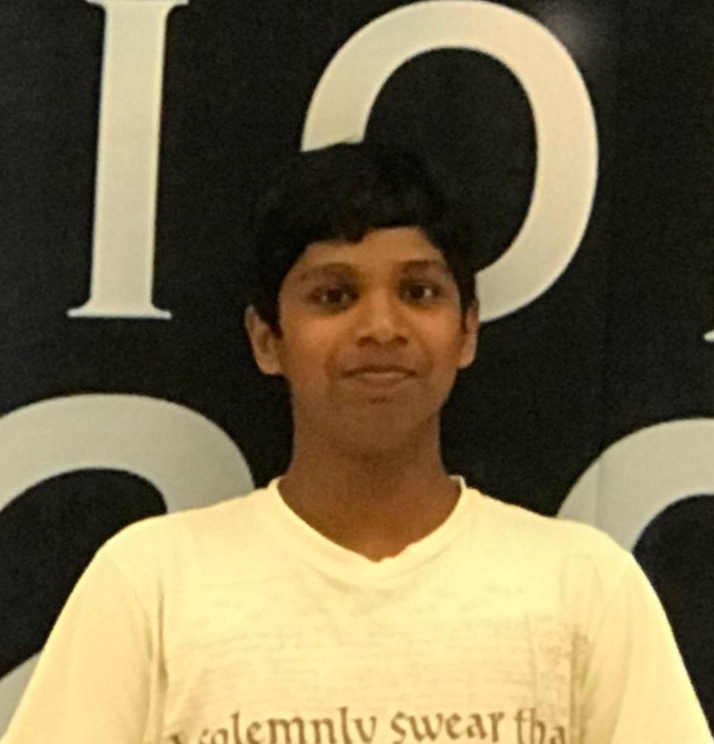
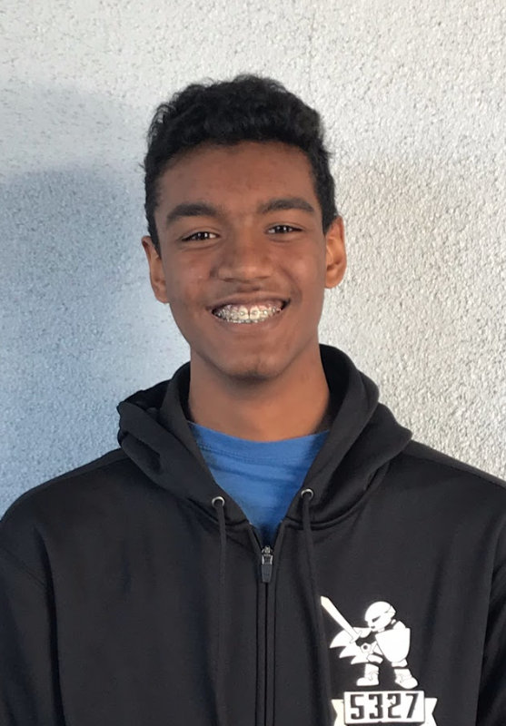
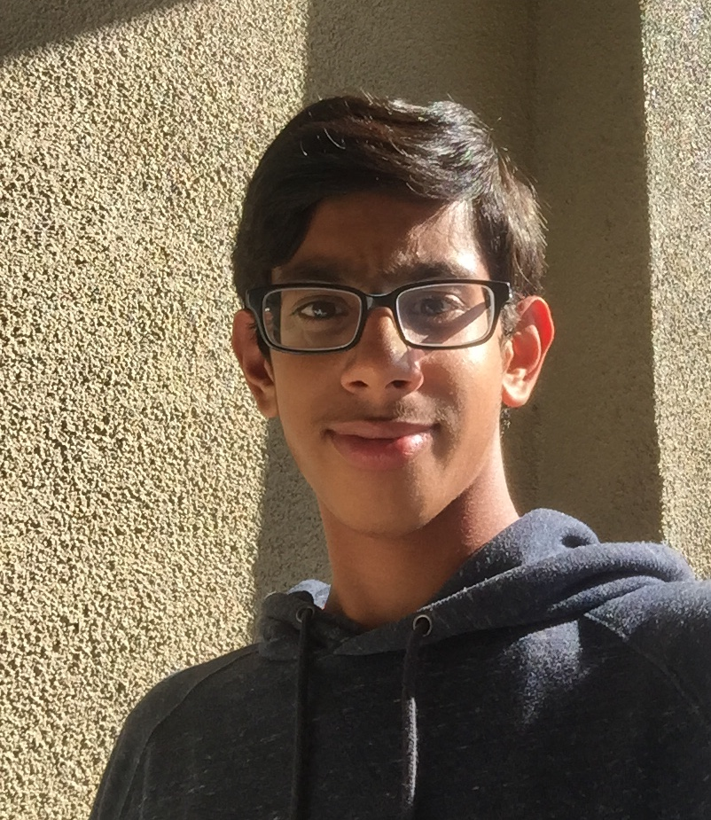
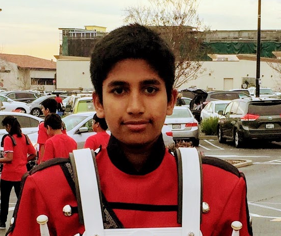

Hi! My name is Nithin Rajakumar.
I am a freshman curently attending Dublin High School, in California.
When I'm not in school, I like reading Harry Potter and playing League of Legends.
I currently am aspiring to become a website developer when I graduate college.
In order to become a website developer, I'm taking the computer science class at Dublin High, and I'm planning take the Principles of Engineering class as well as the Engineering Academy.
I've always had a passion for coding, and being a website developer is a very intriguing frontier in my perspective.
In order to become a successful programmer, you have to be able to communicate with your peers and solve problems by yourself, and be able to solve other people's problems.
I demonstrate these such characteristics of a computer programmer when I figure out my own problems and help other people solve theirs.
In middle school, and the first part of my high school career, I have learned how to manage my time and work.
These skills are needed to be a website developer, because making and maintaining a complex website is lots of work.
So far in my high school career, I have joined the Dublin High Cross Country team and got a job at the Kumon education center.
I've also joined the Boy Scouts of America, and am currently working on my eagle community service project in order to get my Eagle Scout rank.
Throughout all of this, I have acquired time management and leadership skills, such as communitcation.

My name is Rohin Sampeur and I am currently a freshman at Dublin High School in Dublin, California.
My dream job is to become a mechanical engineer because it has always interested me in knowing how things work and perform.
In order to do this, I am enrolled in Introduction of Engineering and Design (IED) at Dublin High School this year.
Throughout IED, I have learned how to properly use all aspects of Inventor and I am now an Autodesk Certified User.
Next year I am taking Principles of Engineering to further expand my learning.
I am also currently in the Engineering Academy as well as a member of VEX Robotics Team 5327B.
By working with my teammates in robotics and doing projects in IED, I have gained insights into the world of engineering while also being able to work well and efficiently in a large group.
I am open-minded about ideas, whether I am in a group or doing something on my own. This helps me utilize multiple ideas and figure out which ones work best.
It allows me to get the best out of what I am doing.
Since I am also curious, I am always trying to find to way to put things together. This has helped me in both robotics and IED.
Along with having fun, I also stay responsible and make sure that everyone stays on task. This year I participated in the science fair held at my school for biology with research and I was the leader of my group.
Since I was the leader, all responsibility for my group's outcome fell onto me. It was crucial that I ensured that everyone contributed equally and that everyone had a say in our ideas and decisions.
This helped me with time management skills so we could finish our project on time. It all paid off however because we ended up getting 2nd place in our division.

My name is Akhil Giridhar and I am currently a freshman at Dublin High School in California.
I am fascinated by how things are built and the thought process the engineers go through in Product Design.
I like innovative ideas in areas of automation. In the advent of machine learning technologies I see huge opportunities to explore my strength in areas of automation and product design.
I am planning to pursue my education in mechanical engineering.
I have enrolled in Introduction To Engineering and will continue on to Principles of Engineering to gain fundamental knowledge of Engineering.
Throughout IED, I have learned how to properly use all aspects of Inventor and I am now an Autodesk Certified User.
I constantly engage myself in experimenting new ideas and challenge myself with complex problems.
During my early childhood I built vehicles using legos from different sets with no instructions or manuals.
I have built more than three vehicles out of such spare components.
This interest soon began to develop and I attended several camps over the summer where I built my own flashlight and created a video game.
One of my biggest passion is playing tennis.
I have participated in 16 USTA tournaments and won four.
Through all the activities I have partaken, I have come to the realize my ambitious and competitive nature.
Whether it is getting a higher score on an engineering project or winning more of my tournaments, I am constantly striving to do better.
Meeting the minimum requirements has never been enough and I always want to go above and beyond.
Since this is my first year of high school, I am still exploring other careers and educating myself in different opportunities that exist.
I am certain life is a continuous learning process and soon something will ignite my passion and help me chose a challenging career.

My name is Kaushik Varma Indukuri and I live in Dublin California.
My goals are to get into a good college, and pursue a career in engineering and computer science.
I wish to do a joint major in college called EECS or Electrical Engineering and Computer Science.
I am very passionate about technology and the love everything about.
There can be so many advances made to technology, and the future is dependent on it.
To achieve my goal of getting into a highly reputable coln math and science since they are the basis for what's behind technology.
Although I am not sure about what exact career I want to pursue, if I learn engineering and computer science, they bralege, to learn about the future, I will first take many advanced and challenging courses inch off to almost any job involving technology, so I will still be able to choose a job or career I am passionate about.
Some strengths about me are my compassion, my ability to think critically, and helpfulness.
I always help people out whether it is just for homework, or about a question, or even a video game.
I having a very caring nature, and will help anyone I can if they want it.
I always am polite, and I respect everyone I talk to, or pay attention to.
I believe in order to be a generous, I must respect the people around me that respect me, and never cause other people problems.
I am however, occasionally, irresponsible, and I might forget to do something, or get off task. Although this happens very rarely, these are still factors about me that I still need to improve on.
I am very athletic and participate in many extracurricular activities as well.
I was in competitive speech and debate team when I was in seventh, and I also am very involved in robotics.
In middle school, I took part in the First Lego League, or FLL. I would build a robot out of lego pieces, and programmed it so it would do the certain tasks assigned to earn points.
As I got older, I began a more advanced robotics competition called Vex.
In Vex, we build robots out of metal such as steel and aluminum and use gears with different gear ratios, for increased speed, or torque.
The robot is remote controlled, but we have to program the remote to be compatible with the robot.
In addition to STEM activities, I also did swimming for 8 years now, and continue to do it.
Now, I go to swim meets in our team, and am very athletic.